Primero entendemos.Después integramos.
Tu negocio vendiendo solo, piso por piso.
ARM, el CRM de Zolko: registra, organiza y da seguimiento a cada cliente.
Por ahí se te van los clientes.
Mensajes de noche, preguntas de precio, gente que ya estaba lista para comprar. Si nadie contesta, le compran a otro.
Con ZOLKO, cada mensaje tiene respuesta.
Tu WhatsApp contesta al momento, aparta la cita y te avisa cuando alguien está listo para comprar.
El sistema, piso por piso.
Los cimientos: el diagnóstico de tu negocio.
Toca un piso para verlo funcionando.
- Qué es
- Qué resuelve
Míralo en tu giro.
Negocios de ejemplo. Abre el de tu giro y pruébalo como si fueras tu cliente.


¿Para quién es ZOLKO?
Para negocios que ya venden y quieren vender más. Si tus clientes ya te escriben, que ninguno se quede sin respuesta.
- Ya vendesTienes clientes y quieres que te compren más y más seguido.
- Contestas a tus clientesAtiendes por WhatsApp, redes o en persona, y quieres hacerlo más rápido y mejor.
- Se te van ventas por no contestarMensajes de noche, cotizaciones sin seguimiento, clientes que se enfrían.
- Quieres un seguimiento que no dependa de tu memoriaQue cada cliente tenga su siguiente paso, aunque estés ocupado.
Negocios que ya trabajan con ZOLKO.

- Eloisa Montero
- Damira
- Los Parados de Sinaloa
Tres pasos, sin enredos.
- Diagnóstico
Entendemos cómo vendes hoy y dónde se te van los clientes.
- Implementación
Diseñamos con las palabras de tus clientes y conectamos WhatsApp, ARM y agenda.
- Ventas
Medimos y ajustamos cada mes.
Ver qué incluye
Lo que va detrás de la página
- Formulario o chat de máximo tres datos.
- ARM: un agente de IA mueve a cada cliente de etapa y te dice cuándo escribirle.
- Seguimiento por WhatsApp: confirmación, recordatorio y seguimiento automáticos.
- Medición: visitas, clics y solicitudes, y de dónde llegan.
Qué incluye tu página
- Pensada primero para celular.
- Botón de WhatsApp con el mensaje ya escrito.
- Formulario conectado a tu ARM y tu WhatsApp.
- Mapa para que lleguen sin preguntar.
- Medición de visitas.
¿Cuánto cuesta?
Cada negocio es distinto, por eso no hay precios de lista: cotizamos directo contigo. Así funciona:
- Diagnóstico de 30 minutosEntendemos cómo vendes hoy y dónde se te van los clientes.
- Cotización directa con RicardoA la medida de tu negocio, solo con lo que te sirve.
- La investigación se te devuelveEmpezamos con una investigación de tu negocio; su costo se te devuelve completo al contratar cualquier servicio.
Te escribe Ricardo por WhatsApp para agendar tu diagnóstico.
Preguntas frecuentes.
¿Necesito saber de tecnología?
No. Nosotros lo instalamos y te enseñamos a usarlo. Tú y tu equipo siguen trabajando desde el celular y WhatsApp.
¿Tengo que cambiar mi número de WhatsApp?
No necesariamente. En el diagnóstico revisamos cómo usas WhatsApp hoy y te decimos la mejor opción para tu número.
¿La IA va a contestar cosas que no debe?
Contesta solo con la información y las reglas que tú apruebas, y te pasa la conversación cuando el cliente necesita a una persona.
¿Cuánto tarda en estar listo?
Depende de lo que tu negocio necesite. En el diagnóstico te damos fechas concretas para cada parte.
¿Qué pasa después del diagnóstico?
Ricardo te manda una cotización a la medida. Si contratas, el costo de la investigación se te devuelve completo.

Agenda tu diagnóstico.
Soy Ricardo Vergara. Primero entiendo cómo vendes; después integro solo lo que te sirve.
Mándame un mensaje con la palabra DIAGNÓSTICO y revisamos tu caso.
WhatsApp: +52 33 4323 0958
Correo: ricardo@zolkointegrations.com